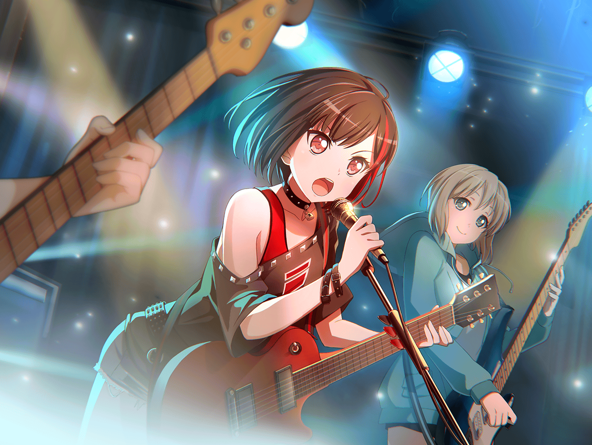

楽屋
ひまり
いよいよ次が私達の出番かあ……
巴
会場の熱気は十分だな
つぐみ
すー、はー。すー、はー。
大丈夫……！ いつも通り、いつも通り……！
モカ
つぐ、いいこと教えてあげよっか。お客さんはねー、
全部パンだと思えばいいんだよ～
モカ
あたしはいつもおいしそーなパンが
並んでるなあって思ってやってるよ
ひまり
それはモカだけだと思うよ……
モカ
ふふーん。ひーちゃんの顔も丸くてパンみたいだな～
ひまり
ひどい～！！
つぐみ
あっ、演奏終わったみたい！
ひまり
きたきたーっ！
巴
いよいよだな
蘭
……みんな。 『いつも通り』……最高の演奏、しよう
一同
おっけ～
うんっ！
ああ！

ステージ
蘭
（すごい熱気……やっぱり、今までのイベントとは全然違う）
蘭
……今、この瞬間から、会場の熱をすべてあたし達のモノにする。
見逃さないでついてきて！ いくよ！

つぐみ
（今日の蘭ちゃん、いつもよりずっと、力強い歌声してる……！）
巴
（迷ってた頃がウソみたいだ……完全に吹っ切れて、さらに観客の熱に影響されて火がついたってカンジだな）
ひまり
（私達も答えなきゃ！ 蘭の声に……！）
数曲後……
観客A
『Afterglow』だっけ……はじめて見たけど、
けっこういいカンジじゃん
観客B
だよね！ ボーカルの子の声、超カッコイイ！
モカ
ふい～。蘭、いつもよりいいカンジだねえ
蘭
モカもね
蘭
（……次で、最後の曲……）
蘭
……
蘭
……次で最後です
蘭
あたしが、道に迷った時……
そばにはいつもメンバー達がいてくれた。
今、ここに立っていられるのも、４人のおかげだって思ってる
蘭
……みんな。あたしは、もう迷わない。
どんなに迷っても、もう逃げたりしない
ひまり
蘭……！
つぐみ
蘭ちゃん……！
蘭
……だから、その気持ちを歌にして、届けたい――！
巴
大盛況、やったな！
あの会場全部、アタシ達のモノって感じだったな！
ひまり
うっうっ……！ ライブ、うまくいってよかったよぉ～！
なんか、安心しちゃったあ……
モカ
ひーちゃんはライブの度に泣くなあ。あ、写真とっとこー
ひまり
ちょっ、やめてよぉ～！
つぐみ
今日の蘭ちゃん、すごかったよ！
なんだか、私も演奏しながら感動しちゃったよ……！
巴
今日の蘭はここ最近で一番アツかったよ。
そのおかげで、アタシらも最高の演奏ができた！
蘭
今日あの歌が歌えたのは、みんなのおかげだよ。
……本当に、ありがとう
ひまり
ううっ、そんなこと言われたらまた泣けてきちゃうよぉ～！
モカ
シャッターチャーンス
つぐみ
も、モカちゃん～！！
蘭の父
……蘭
蘭
……！ 父さん
モカ
わあ～、蘭のパパだあ。お久しぶりでーす
蘭の父
こんにちは、モカちゃん。みなさんも……
いつも蘭がお世話になってます
モカ
お世話してまーす
巴
お、おいっ……！
蘭の父
ははは、いいんですよ。本当のことでしょうから。
皆さんの演奏、聴かせてもらいました
蘭の父
……正直、高校生が趣味でやっている
バンドなんて、たかが知れていると……そう思っていました
蘭の父
しかし……非常に感動しましたよ。情熱的で、
大変素晴らしい演奏でした。私が忘れていた、前のめりな感情を
思い出させてくれましたよ。……蘭
蘭
……
蘭の父
お前の情熱や、思いはしっかりと伝わった。
これほどまで真剣に、バンドに打ち込んでいたのだな
蘭の父
そして、一緒に作り上げてくれる仲間を大切にしなさい
蘭
……！ それじゃあ……
蘭の父
バンド活動を認めよう。……お前は、いい仲間に恵まれたな
蘭
……っ！ ありがとう、ございます……！
ひまり
蘭、よかったね……！
巴
ああ、ほんとによかった……！
今日は、最高の日だ……！
つぐみ
うっ……うっ……よかった……っ！
モカ
蘭～、これからも、がんばろーね
蘭
うん……うんっ……！
蘭
みんな、本当に……本当に、ありがとう……っ！